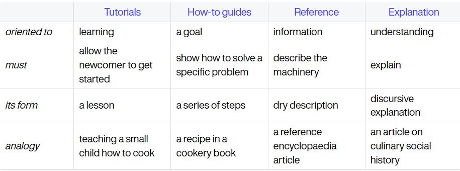
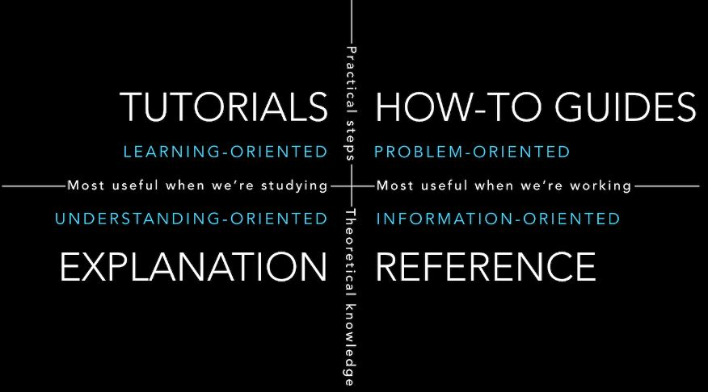

About This Documentation
This section describes the organization of Compass DSL documentation.
Using This Documentation
The Compass DSL documentation follows the Documentation System:


It is structured into four parts:
Getting Started
A simple introduction to Compass DSL.
A step-by-step installation guide.
A simple introduction to the build and run workflow.
Tutorials: How to use Compass DSL to write a kernel?
How-to Guides
These are step-by-step guides on how to solve specific problems. In a how-to guide, we assume that the user already knows some basic knowledge and can use basic tools. Each title of topics in how-to-guides is a specific question.
Tutorials V.S. How-to-guides?
- A tutorial is oriented towards the new user, which is what a beginner needs to know.
- A how-to guide provides a solution to a specific problem that requires some prior knowledge.
Explanation
The articles in this section for providing more insight or understanding, contain the bigger picture, the context, the background, and the relative works.
For a better understanding of Compass DSL, we provide articles about relevant theoretical knowledge, such as the programming language, the compiler theory, and the Zhouyi NPU architecture.
Reference
The articles in this section are used to search for details of each API.